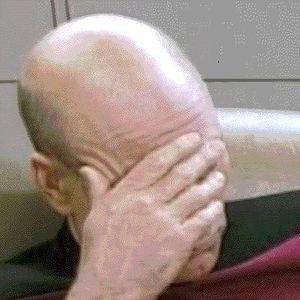

Caillou
 De: La Frikipedia, la enciclopedia extremadamente seria.
De: La Frikipedia, la enciclopedia extremadamente seria.
Es feo, ridículo, retrasado y ...¡Calvo! Hablamos de Caillou (no hablamos del Calvo de la lotería)
¿Qué se esconde tras esta repelente adorable apariencia de chaval de cuatro años?¿Qué pretendían los creadores con esta serie que pone en evidencia a todos los calvos infantil tan tonta?
 Caillou dentro de 20 años. Está pasando por la crisis económica.
Argumento
Caillou fue una serie que marcó huella entre todos los tontitos del pais (o del mundo). El chaval era muy conocido por sus crímenes, robos o violaciones a su hermanita. Su serie relata todos sus crimenes y acusaciones en el mundo de la hierva. Él y su familia viven en una casa decorada a lo "casa de muñecas de porcelana" para atraer a los clientes hacía el puticlub. Su familia está formada por cinco, incluyendo al minino, la mascota consoladora de la familia. Al parecer, la familia era muy pobre, siempre llevaban los mismos trapos (imagínate su olor corporal) Pero los padres no se daban cuenta de que su amado hijito era el que despirrafaba el dinero comprando canutos.
Personajes
- Caillou:Ha superado ha todos los traficantes de maría del pais. Adora las hiervas, el Manual de las 48 poses Sexuales y su consolador en forma de dinosaurio, que aparece en todos los capitulos. Al parecer, padece cáncer, lo que ha hecho que pierda el pelo (hay leyenas urbanas que dicen que antes de su perdida, tenía un pelazo rubio a lo Justin Bieber).
- Padre:Es la viva imagen de su hijo. Empezó con la traficación a los ocho años y pretende que sus hijos aprendan trucos del negocio familiar con antelación. Como les hacía falta pasta, fundó en la casa un puticlub aprobechando su experiencia para poder salir de la crisis económica, pero como no es muy visitado, practica su experiencia con su mujer, a la que conoció en un bar de carretera. Sabrán distingurlo gracias a sus extrañas cejas y su peinado algo parecido a los de John Travolta.
- Madre:Es la prosti del lugar, y la mas hortera del vecindario. Lleva en el pelo un collar de perro antipulgas azul y no utiliza sugetador. Trabaja noche y día fuera de casa (su marido cree que trabaja en un puesto de maría en un barato pero en realidad la contrataron en un puticlub de cinco estrellas mejor que el de su casa.¡Eso si es servicio!)
- Rosie:Es la prostituta más joven de la ciudad. Adora montar a "vaquerita" a su gato y ama su consolador en forma de Teddy (articulos que saldrán a la venta en el 2.013). Es la compañera sentimental de Laa-laa de los Teletubbies y también tiene relaciones con Elmo.
Estos son los amigos de Caillou:
- Leo:Es el compañero sentimental de Caillou. Es gordo y grasiento y tiene una apariencia similar a Chucky pero a lo gay.
- Sara:Es la amiga con derecho a roce número 1 de Caillou. Es una prostituta muy reconocida en oriente que emigró a otro pais para fundar un puticlub chino.
- Clementine:Es la amiga con derecho a roce número 2 de Caillou.Es muy buena en el sexo pero no ha conseguido muchos novios por su pelo estropajo.
Canción principal
Como la versión original no era frikipedika aquí te presentamos la canción principal de Caillou cantado por FISTROFILMS (ver video de Youtube http://youtu.be/i8PPV0dS4_g):

|
(Madre) Oye Caillou quiere que te prepare unas croquetas.
Caillou) La unica croqueta que va a probar tu es la que tengo como organo reproductor puta. (Empieza Música)
Con casi 4 tacos, sigo sin trabajo y voy engordado, SOY CALVO.
Puta policia, me quita la droga, ajuste de cuentas, SOY CALVO.
La cocaína me hace flipar.
(Coro) Mi padre está en la Prisión estatal.
Salgo por ahí, me meto en peleas con bandas neonazis, SON NAZIS, NAZIS, NAZIS, SON NAZIS.
Hi Hitler.
|

|
|
|
Preguntas frecuentes
- ¿Que càncer padece Caillou?¿Cuando morirá?
- ¿Por qué Rosie tenía relaciones con Elmo y no con El monstruo de las galletas?
- ¿Por qué la madre no utilza sugetador?¿Y por qué no lencería para probocar a su marido?
- ¿Por qué Clementine tiene la nariz aplastada?¿Acaso la atropeyó un camión?
- ¿Por qué el gato tiene un ojo azul?
- ¿Por qué los padres no tienen nombre?
- ¿Quién violó a Heidi?¿Qué pinta esta pregunta aquí?¿Fué el perro o Pedro el Cabrero?
Enlaces externos
¡El mejor capitulo de Caillou!
¡El segundo capitulo!
Autor(es):
- Fordus
- KChulaSoy
- Kagami-sama
- Tontousgilipollen
- GOYOMAN
- Juan Fernandez Soria
Frikipedia 2005-2016, Licencia
GFDL 1.2 - Extraído por FrikiLeaks